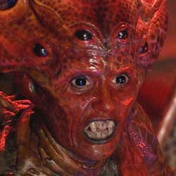

The Empress of Racnoss
The Racnoss appeared in the Tenth Doctor story "The Runaway Bride" in 2006.
The Racnoss were an ancient race of aliens from the Dark Times of the universe. Half-humanoid, half-arachnid in appearance, they were an invasion force who consumed everything on the planets they conquered. Their race was wiped out by the Fledgling Empires, including the Time Lords, over 4.6 billion years ago. Nearly all of the survivors of the race escaped in their ship to where the Earth would later form, serving in place of a planetesimal as its core, hibernating for billions of years, with the exception of their Empress. She would later come to Earth in her ship, the Webstar, seeking to use the Huon particles which had been recreated by the Torchwood Institute as a means of resurrecting her "children" before feasting on the human population of Earth. The last Racnoss were presumed wiped out when the Doctor drained the waters of the Thames down the shaft leading to their ship; the Empress was killed when her own ship was destroyed by the British army at the order of Mr. Saxon (actually the Master).
The Empress appears briefly in a flashback in "Turn Left". In the parallel universe created by Donna Noble, she has still been defeated, but the Doctor, taking too long to escape without Donna's assistance, was drowned and died with her, the water killing him too quickly for him to regenerate; without his protection, the Earth became a dystopia over the next few years.
|